visual_001_alpha_rop
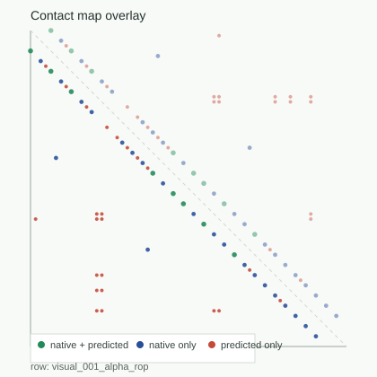
F1: 0.266667 | visible_partial_success
This Is A Mechanism Visualization, Not A Solved Folding Engine

F1: 0.266667 | visible_partial_success
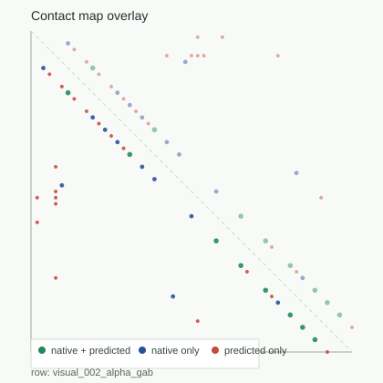
F1: 0.363636 | visible_partial_success
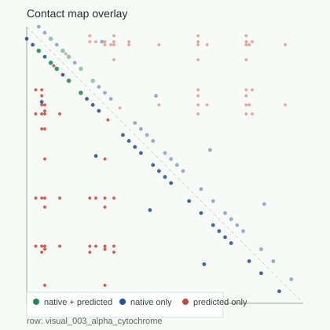
F1: 0.126582 | visible_partial_success
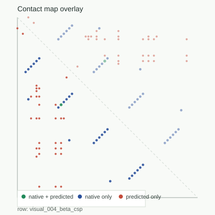
F1: 0.033333 | beta_long_range_pairing_failure
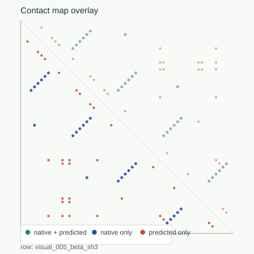
F1: 0.0 | beta_long_range_pairing_failure
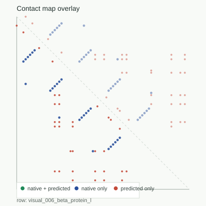
F1: 0.0 | beta_long_range_pairing_failure
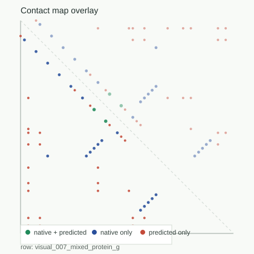
F1: 0.083333 | false_contact_overprediction
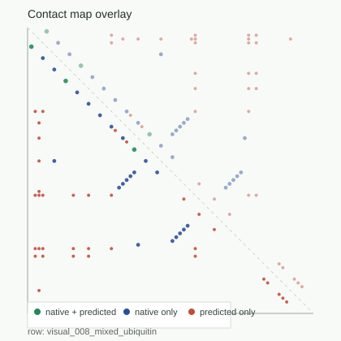
F1: 0.096774 | false_contact_overprediction
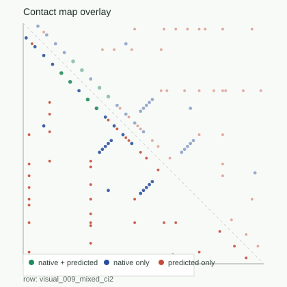
F1: 0.119403 | visible_partial_success
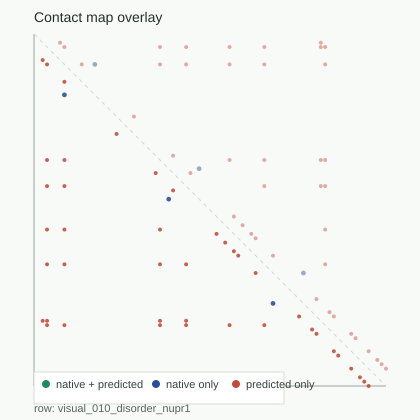
F1: 0.0 | disorder_control_overclosure_failure

F1: 0.019512 | membrane_contact_topology_failure
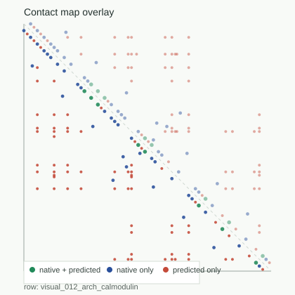
F1: 0.13913 | visible_partial_success
| row | secondary | architecture | contact_map_f1 | cohort | visuals |
|---|---|---|---|---|---|
| visual_001_alpha_rop | alpha_rich | compact_single_domain | 0.266667 | visible_partial_success | overlay | trajectory |
| visual_002_alpha_gab | alpha_rich | compact_single_domain | 0.363636 | visible_partial_success | overlay | trajectory |
| visual_003_alpha_cytochrome | alpha_rich | compact_single_domain | 0.126582 | visible_partial_success | overlay | trajectory |
| visual_004_beta_csp | beta_rich | compact_single_domain | 0.033333 | beta_long_range_pairing_failure | overlay | trajectory |
| visual_005_beta_sh3 | beta_rich | compact_single_domain | 0.0 | beta_long_range_pairing_failure | overlay | trajectory |
| visual_006_beta_protein_l | beta_rich | compact_single_domain | 0.0 | beta_long_range_pairing_failure | overlay | trajectory |
| visual_007_mixed_protein_g | alpha_beta_mixed | compact_single_domain | 0.083333 | false_contact_overprediction | overlay | trajectory |
| visual_008_mixed_ubiquitin | alpha_beta_mixed | compact_single_domain | 0.096774 | false_contact_overprediction | overlay | trajectory |
| visual_009_mixed_ci2 | alpha_beta_mixed | compact_single_domain | 0.119403 | visible_partial_success | overlay | trajectory |
| visual_010_disorder_nupr1 | weak_or_unknown | unknown | 0.0 | disorder_control_overclosure_failure | overlay | trajectory |
| visual_011_membrane_rhodopsin | alpha_rich | unknown | 0.019512 | membrane_contact_topology_failure | overlay | trajectory |
| visual_012_arch_calmodulin | alpha_rich | multidomain_or_segmented | 0.13913 | visible_partial_success | overlay | trajectory |
{kind=link}
{kind=link}
{kind=link}
{kind=link}
{kind=link}
{kind=link}
{kind=link}
{kind=link}
{kind=link}
{kind=link}
{kind=link}